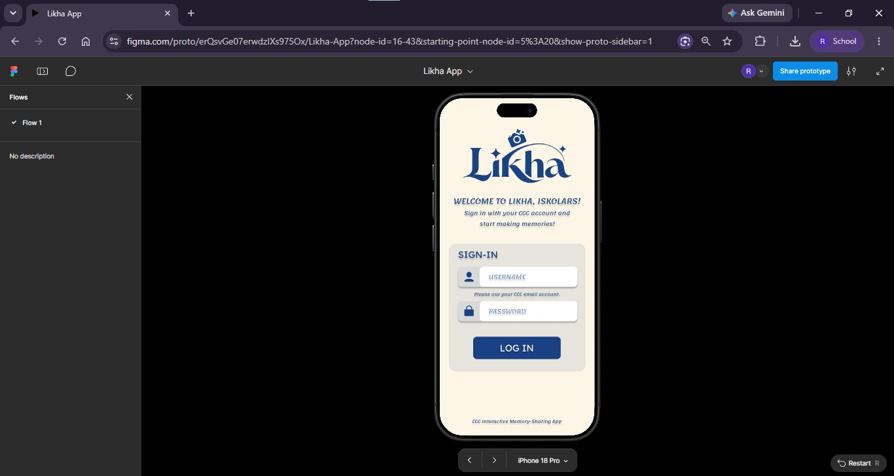

Likha: CCC Interactive Memory-Sharing App
The problem: School event photos and videos end up scattered across group chats and personal phones, so they are easy to lose and hard to look back on.
What we built: Likha is a concept app where CCC students keep event memories on a timeline: photos, videos and live photos, grouped into albums by event. Students can react, comment and share. Time Capsule and Yearbook are the premium features. It was our group's final project for Technopreneurship.
My role: I designed the Figma prototype and wrote some for the project documentation.
What I learned: I learned how to turn a business idea into a clickable prototype and how to organize screens into a user flow.
Tools: Figma, Google Docs
Screenshot goes here
